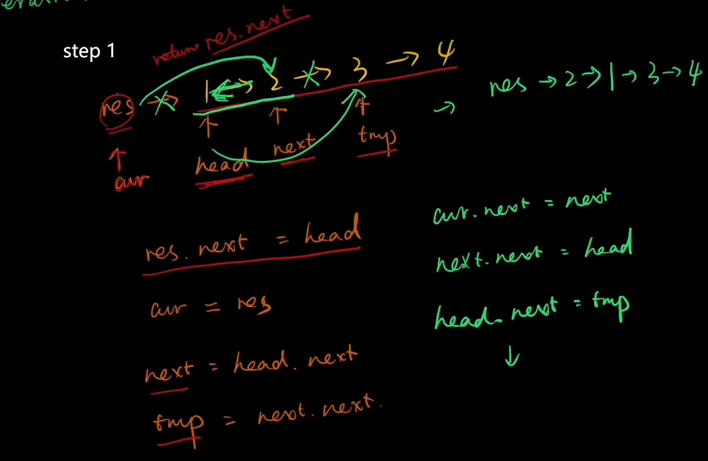
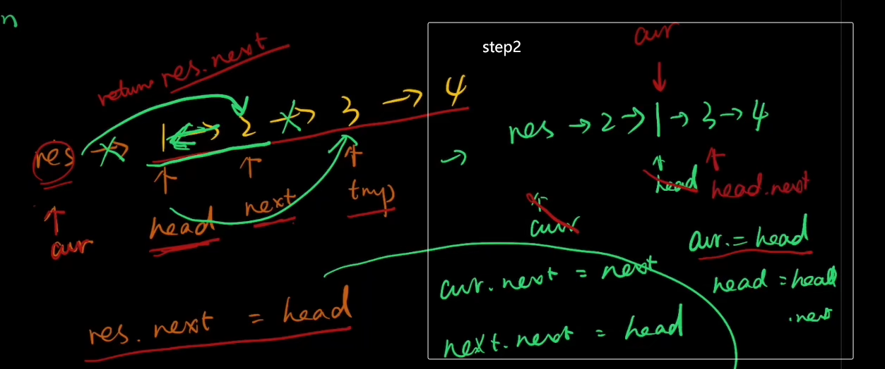
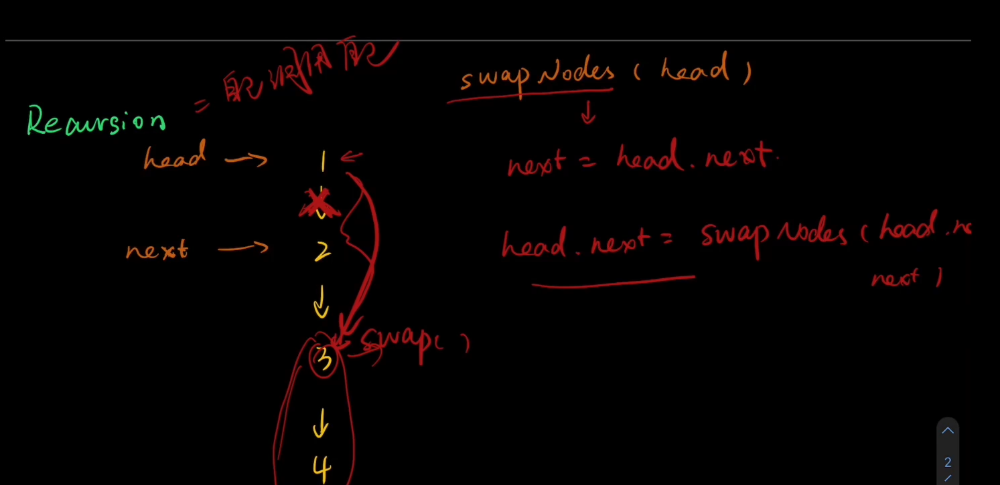

leetcoce随记
1
import java.util.HashMap;
class Solution {
public static void main(String[] args) {
Solution solution = new Solution();
int[] fnums = {3, 2, 4};
int[] result = solution.twoSum(fnums, 6);
for (int i = 0; i < result.length; i++) {
System.out.println(result[i]);
}
}
public int[] twoSum(int[] nums, int target) {
int diff=0;
HashMap<Integer, Integer> hashMap = new HashMap<>();
for (int i = 0; i < nums.length; i++) {
hashMap.put(nums[i],i);
}
for (int i = 0; i < nums.length; i++) {
diff=target-nums[i];
if (hashMap.containsKey(diff)&&hashMap.get(diff)!=i){
int[] ints = new int[2];
ints[0]=i;
ints[1]=hashMap.get(diff);
return ints;
}
}
return new int[0];
}2
迭代法
public class ListNode {
int val;
ListNode next;
ListNode() {
}
ListNode(int val) {
this.val = val;
}
ListNode(int val, ListNode next) {
this.val = val;
this.next = next;
}
}
class Solution {
public static void main(String[] args) {
Solution solution = new Solution();
ListNode l1 = new ListNode(
2, new ListNode(
4, new ListNode(
3, null)));
ListNode l2 = new ListNode(
5, new ListNode(
6, new ListNode(
4, null)));
ListNode listNode = solution.addTwoNumbers(l1, l2);
while (listNode!=null){
System.out.print(listNode.val+" ");
listNode=listNode.next;
}
}
public ListNode addTwoNumbers(ListNode l1, ListNode l2) {
int cf = 0;//进位标志
int total=0;
ListNode result = new ListNode();//结果的头指针
ListNode tempNode=result;
while (l1 != null && l2 != null) {
total=l1.val + l2.val + cf;
tempNode.next=new ListNode((total) % 10);//当位数
cf = (total) / 10;//进位
l1=l1.next;
l2=l2.next;
tempNode=tempNode.next;
}
while (l1 != null ) {
total=l1.val + cf;
tempNode.next=new ListNode((total) % 10);//当位数
cf = (total) / 10;//进位
l1=l1.next;
tempNode=tempNode.next;
}
while (l2 != null ) {
total=l2.val + cf;
tempNode.next=new ListNode((total) % 10);//当位数
cf = (total) / 10;//进位
l2=l2.next;
tempNode=tempNode.next;
}
if (cf!=0){
tempNode.next=new ListNode(cf);//当位数
}
return result.next;
}
}
递归法
public ListNode addTwoNumbers(ListNode l1, ListNode l2) {
int total;
int cf;
ListNode res = new ListNode();
total = l1.val + l2.val;
cf = total / 10;
res = new ListNode(total % 10);
if (l1.next != null || l2.next != null || cf != 0) {
if (l1.next != null) {
l1 = l1.next;
} else {
l1 = new ListNode(0);
}
if (l2.next != null) {
l2 = l2.next;
} else {
l2 = new ListNode(0);
}
l1.val = l1.val + cf;//因为对于下一层递归来说，这里的cf是透明的，所以在进入递归之前需要先加进位
res.next = addTwoNumbers(l1, l2);
}
return res;
}20
自己
| 执行用时分布 | 消耗内存分布 |
|---|---|
| 2ms | 40.23MB |
| 击败51.55%使用 Java 的用户 | 击败13.63%使用 Java 的用户 |
import java.util.Stack;
class Solution {
char l1='(';
char r1=')';
char l2='[';
char r2=']';
char l3='{';
char r3='}';
public boolean isValid(String s) {
Stack<Character> stack = new Stack<>();
boolean flag=true;
char[] charcuray = s.toCharcuray();
char temp;
char tempBracket;
int ll=0;
int rr=0;
int num=0;
for (int i=0;i<charcuray.length;i++){
temp=charcuray[i];
if (temp==l1||temp==l2||temp==l3){
stack.add(temp);
ll++;
num++;
}
if ((temp==')'||temp==']'||temp=='}')&&stack.isEmpty()){
flag=false;
return flag;
}
if (!stack.isEmpty()){
if (temp==r1||temp==r2||temp==r3){
tempBracket=stack.pop();
rr++;
if (temp==']'){
if (tempBracket!='['){
flag=false;
return flag;
}else {
num--;
}
}
else if (temp==')'){
if (tempBracket!='('){
flag=false;
return flag;
}else {
num--;
}
}
else if (temp=='}'){
if (tempBracket!='{'){
flag=false;
return flag;
}else {
num--;
}
}
}
}
}
if (ll-rr!=0||num!=0){
flag=false;
return flag;
}
return flag;
}
public static void main(String[] args) {
String s = "()";
Solution solution = new Solution();
System.out.println(solution.isValid(s));
}
}
被优化
| 执行用时分布 | 消耗内存分布 |
|---|---|
| 1ms | 40.45MB |
| 击败98.64%使用 Java 的用户 | 击败9.24%使用 Java 的用户 |
public boolean isValid(String s) {
if (s.length() == 0) {
return true;
}
Stack<Character> stack = new Stack<>();
for (char ch : s.toCharcuray()) {
if (ch == '(' || ch == '[' || ch == '{') {
stack.push(ch);
} else {
if (stack.isEmpty()) {
return false;
} else {
char temp = stack.pop();
if (ch == ')') {
if (temp != '(') {
return false;
}
} else if (ch == ']') {
if (temp != '[') {
return false;
}
} else if (ch == '}') {
if (temp != '{') {
return false;
}
}
}
}
}
return stack.isEmpty()? true:false;
}//抄的21
public class ListNode {
int val;
ListNode next;
ListNode() {
}
ListNode(int val) {
this.val = val;
}
ListNode(int val, ListNode next) {
this.val = val;
this.next = next;
}
}
class Solution {
public static void main(String[] args) {
Solution solution = new Solution();
// 示例链表1: 1 -> 3 -> 5
ListNode list1 = new ListNode(1);
list1.next = new ListNode(3);
list1.next.next = new ListNode(5);
// 示例链表2: 2 -> 4 -> 6
ListNode list2 = new ListNode(2);
list2.next = new ListNode(4);
list2.next.next = new ListNode(6);
ListNode result = solution.mergeTwoLists(list1, list2);
}
public ListNode mergeTwoLists(ListNode list1, ListNode list2) {
// 创建一个哑节点作为合并后的链表的头节点
ListNode dummy = new ListNode(0);
ListNode current = dummy;
while (list1!=null&&list2!=null){
if (list1.val<list2.val){
current.next=list1;
list1=list1.next;
}else {
current.next=list2;
list2=list2.next;
}
current=current.next;
}
if (list1!=null){
current.next=list1;
}else if (list2!=null){
current.next=list2;
}
return dummy.next;
}
}
22括号生成（回溯）
回溯法
import java.util.curayList;
import java.util.List;
class Solution {
public static void main(String[] args) {
Solution solution = new Solution();
List<String> strings = solution.generateParenthesis(2);
}
public List<String> generateParenthesis(int n) {
List<String> result = new curayList<>();
backtracking(n,result,0,0,"");
return result;
}
void backtracking(int n,List<String> result,int left,int right,String str){
if (right>left){
return;
}
if (left==right&&right==n){
result.add(str);
return;
}
if (left<n){
backtracking(n,result,left+1,right,str+"(");
}
if (right<n){
backtracking(n,result,left,right+1,str+")");
}
}
}24两两交换链表中的节点(链表交换)
迭代法iteration

把res->1的指针断了，让cur指向2
cur.next=next把 2->3的指针断了，并 让next（原本指向2的指针）指向1
next.next=head把head.next的指针断了，让它指向temp
head.next=temp此时链表为
res->2->1->3->4接下来同理。

↑↑
cur=head;
head=head.next
然后 重复123步，得到链表
res->2->1->4->3
class Solution {
/*
* res -> 1 -> 2 -> 3 ->4
* cur head next temp
*
* */
public ListNode swapPairs(ListNode head) {
if (head==null||head.next==null){
return head;
}
ListNode res=new ListNode(0);
res.next=head;//使res把链表串起来：res->1->2->3->4
ListNode cur=res;//辅助指针
while (cur.next!=null&&cur.next.next!=null){
ListNode next=head.next; //定义指针
ListNode temp=head.next.next; //定义指针
cur.next=next; //两两
next.next=head; //交
head.next=temp; //换
cur=head;//虽然叫head，但是它指向的是1，此时1已经是第二个节点了（不算res）
head=head.next;//把head指向3,下个循环解决的就是3->4的交换
}
return res.next;//返回的是res，因为cur已经滚到后面去了
}
}注：真实链表一直是以res起头的，即res->1->2->3->4==>res->2->1->3->4==>res->2->1->4->3。所以返回的是res.next而不是cur.next
递归法recursion

把1->2的指针切断，让1的next指向head.next.next。所以head.next就是递归自己即swapPairs(head.next.next);
ListNode next=head.next;(使得指针next对应2)head.next=swapPairs(head.next.next);注意，此时的next指针的next应该不指向3了（2->3的关联别切断了），并且应该指向1，即
next.next=head
(具体请看图，如果看不懂就再画一次)。周某，我知道你第二次或许还是看不懂，所以干脆再画一遍吧，第一次能画出来，那第二次一定可以的。

class Solution {
public ListNode swapPairs(ListNode head) {
if (head==null||head.next==null){//递归终止条件
return head;
}
ListNode next=head.next;
head.next=swapPairs(head.next.next);
next.next=head;
return next;
}
}49. 字母异位词分组
排序法
class Solution {
public static void main(String[] args) {
Solution solution = new Solution();
String[] strings = new String[6];
strings[0]="eat";
strings[1]="tea";
strings[2]="tan";
strings[3]="ate";
strings[4]="nat";
strings[5]="bat";
solution.groupAnagrams(strings);
}
public List<List<String>> groupAnagrams(String[] strs) {
HashMap<String,ArrayList> result=new HashMap<>();
for (String s:strs){
char[] temp=s.toCharArray();
Arrays.sort(temp);
String key= Arrays.toString(temp);
if (!result.containsKey(key)){
result.put(key,new ArrayList<>());
}
result.get(key).add(s);
}
return new ArrayList(result.values());
}
}哈希法
public List<List<String>> groupAnagrams(String[] strs) {
HashMap<String, ArrayList> result = new HashMap<>();
for (String s : strs) {
int[] count_table = new int[26];
for (char c : s.toCharArray()) {
count_table[c - 'a']++;
}
StringBuilder sb = new StringBuilder();
for (int count : count_table) {
sb.append("#");
sb.append(count);
}
String key = sb.toString();
if (!result.containsKey(key)) {
result.put(key,new ArrayList<>());
}
result.get(key).add(s);
}
return new ArrayList(result.values());
}46全排列（回溯）
回溯法
class Solution {
public static void main(String[] args) {
Solution solution = new Solution();
}
public List<List<Integer>> permute(int[] nums) {
HashMap<Integer, Boolean> map = new HashMap<>();
ArrayList<List<Integer>> result = new ArrayList<>();
ArrayList<Integer> list = new ArrayList<>();
for (int num : nums) {
map.put(num, false);
}
backtracking(nums, result, map, list);
return result;
}
void backtracking(int[] nums,List<List<Integer>> result,HashMap<Integer, Boolean> map,ArrayList<Integer> list ){
if (nums.length==list.size()){
result.add(List.copyOf(list));//防止引用传递
}
for (int num : nums) {
if (!map.get(num)){
list.add(num);
map.put(num,true);
backtracking(nums, result, map, list);
list.remove(list.size()-1);
map.put(num,false);
}
}
}
}53最大子数组和（分治&&动规）
分治法
图示

代码
class Solution {
public static void main(String[] args) {
Solution solution = new Solution();
System.out.println(solution.maxSubArray(new int[]{5, 4, -1, 7, 8}));
}
public int maxSubArray(int[] nums) {
return getMax(nums, 0, nums.length - 1);
}
int getMax(int[] nums, int left, int right) {
int mid = 0;
int leftMax = 0;
int rightMax = 0;
int crossMax = 0;
if (left == right) {//分治法用了递归的思想，所以要有终止条件
return nums[left];//分治到只有它自身为止
}
mid = left + (right - left) / 2;
leftMax = getMax(nums, left, mid);
rightMax = getMax(nums, mid + 1, right);
crossMax = getCrossMax(nums, left, right);
return Math.max(leftMax, Math.max(rightMax, crossMax));
}
int getCrossMax(int[] nums, int left, int right) {
int mid = 0;
int leftSum = 0;
int leftMax = 0;
int rightSum = 0;
int rightMax = 0;
mid = left + (right - left) / 2;
leftSum = nums[mid];
leftMax = nums[mid];
for (int i = mid - 1; i >= left; i--) {
leftSum = leftSum + nums[i];
leftMax = Math.max(leftMax, leftSum);
}
rightSum = nums[mid + 1];
rightMax = rightSum;
for (int i = mid + 2; i <= right; i++) {
rightSum = rightSum + nums[i];
rightMax = Math.max(rightMax, rightSum);
}
return leftMax + rightMax;
}
}动规法
public int maxSubArray(int[] nums) {
int[] dp = new int[nums.length];
dp[0]=nums[0];
int result=nums[0];
for (int i = 1; i < nums.length; i++) {
dp[i]=Math.max(dp[i-1]+nums[i],nums[i]);
result=Math.max(result, dp[i]);
}
return result;
}34. 在排序数组中查找元素的第一个和最后一个位置
虽然自己做出了，但是分析的方法有问题。以后先要分析可能遇见的各种情况，然后在针对可能出现的情况进行编写。
以下是没有想到的方面：
按照三种情况：target 在数组范围的右边或者左边、target 在数组范围中，且数组中不存在target、target 在数组范围中，且数组中存在target。
分别编写找右边界和找左边界的函数。然后整合时在近一步验证
没有想到可以在一层循环中直接搞定元素第一次/最后一次出现的位置。对二分法的变式没有很好的掌握。
return new int[]{-1, -1};忘记了匿名数组的写法。